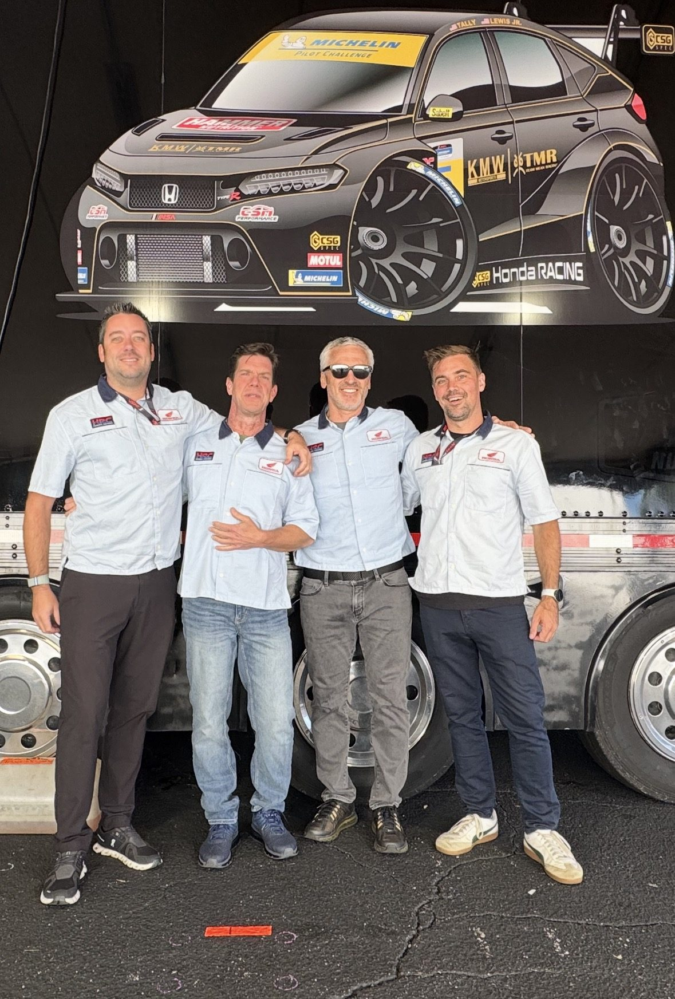

About CorsaLogic
A motorsport engineering practice. Strong, clean, and spare on purpose.
CorsaLogic exists because most race programs do not lose on speed. They lose on preparation: a setup nobody wrote down, a fuel number guessed at, a problem that was visible in the data two events ago.
We have engineered and run cars across GT3, GT4, and TCR paddocks, professional and club, and the method is the same at every level. Plan the weekend in writing. Run the car on data and driver feedback together. Debrief honestly, then carry the lessons forward instead of relearning them.
The tools reflect that. LogiCAL, our line of car management software, keeps setup history, build sheets, and component life in one place, so the knowledge belongs to the program, not to somebody's memory.

Simple and easy to understand. Engineering centric. Results driven.